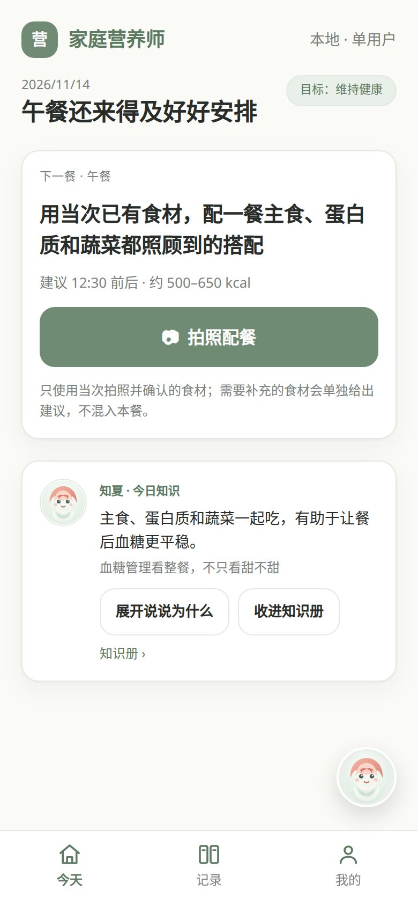
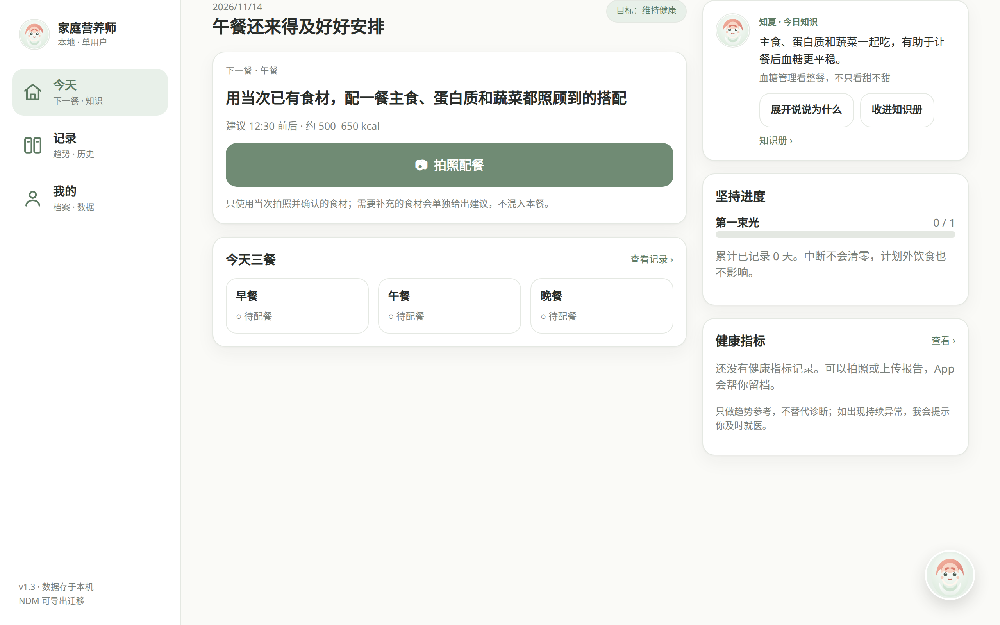
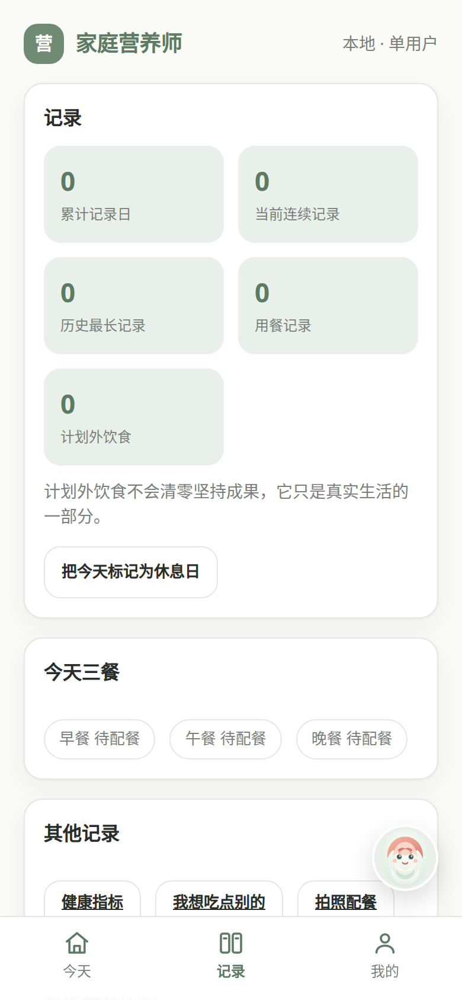
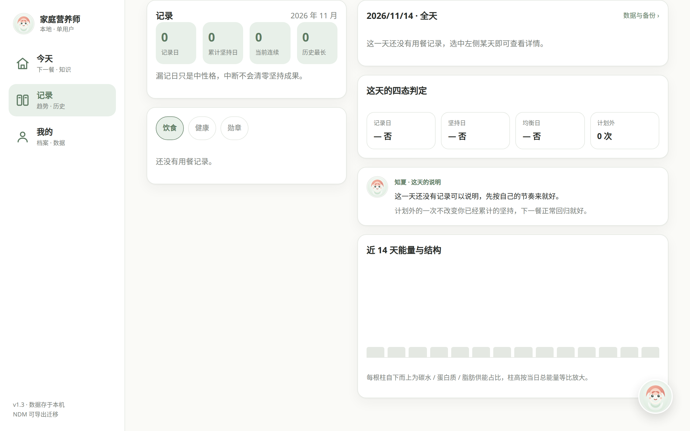

依据《UI 设计方案 V1.1（含界面图）》图 1 / 图 2 / 图 14 / 图 15 ｜ 2026-11-14 ｜ 仓库 WFY-1-BYO/-app · 分支 main
手机（vivo S7）保持 V1.2 已确认的极简一屏；平板（Lenovo Y900）按文档补齐左侧导航栏 + 首页双栏 + 记录双栏。运动相关内容继续按 V1.2「全删干净」不实现。
| 改编 | 内容 | 依据 |
|---|---|---|
| A 导航 | ≥900px 渲染左侧固定导航栏（品牌、三入口带副标题、选中浅绿底、底部版本说明）；手机仍为底部三段导航。emoji 换为 24dp 线性 SVG 图标，悬浮球吸附区避开导航与主按钮。 | 图 2 / 图 14 |
| B 首页 | 平板主栏：日期目标 + 下一餐卡片 + 唯一 56dp 主 CTA + 今天三餐状态；副栏：营养师说 + 坚持进度 + 健康指标摘要（只做趋势参考、提示就医，不诊断）。手机首页不新增任何下滑内容。 | 图 14 |
| C 记录 | 平板左栏：四项坚持统计 + 饮食/健康/勋章分类 + 可点选历史列表；右栏：供能环（中心总能量、图例带克数与百分比）+ 四态判定 + 知夏说明 + 近 14 天堆叠柱。手机保持单列。 | 图 15 |
| D 规范 | 6 色色板（移除红色失败色）、字阶变量、卡片圆角 16 / 双层轻阴影 / 内边距 16、次按钮白底描边、触控目标 ≥44dp、悬浮球 56dp/64dp、供能环收敛到色板、prefers-reduced-motion 降级。 | 图 1 |




| typecheck | 通过 |
|---|---|
| lint | 0 warning / 0 error（68 文件、116 规则） |
| 单测 | 23 文件 / 128 测试全部通过 |
| build | 通过 |
| 异常警告 | 0 条 |
浏览器实测Chromium 全新会话建档后逐项核对 DOM：
每个改编后单独执行 typecheck → lint → test → build，通过即 commit + push；全部改完后再跑一次全量回归。远程 main 与本地一致，工作区干净。
仓库只含源码、文档与界面截图，不含健康数据、.ndm.md 数据文件、密钥或附件。
/assistant.svg，未引入 Live2D / 语音。